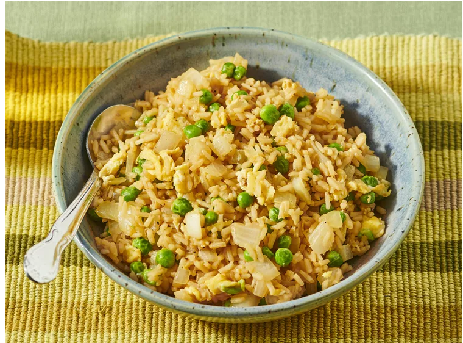

Fried-Rice
Egg Fried Rice is a very nutritional dish

Egg fried rice is a quick, savory dish made by stir-frying cooked rice—ideally day-old or chilled—with scrambled eggs, aromatics, and seasoning.
Ingredients Required
- Eggs
- Cooked Rice-(best if left it in refigrator)
- Oil or butter
- Maggi masala
- Salt and MSG
- Onions
- Spring onions
- Ginger and garlic paste
Steps to make Egg-fried-Rice
- Take a tablespoon of oil or butter-Let it burn for 1-2minutes
- One small chop oninos
- fry it for 3-4 minutes until GBD
- half tablepoon of ginger garlic paste
- cook for 2 minutes
- Crack 3-4 Eggs
- Pour the rice alongside eggs
- Cook the eggs and rice until it sober
- Add your masala,salt and MSG
- Let it cook for 3-4 minutes
- Off the flame
- Garnish it with spring onions